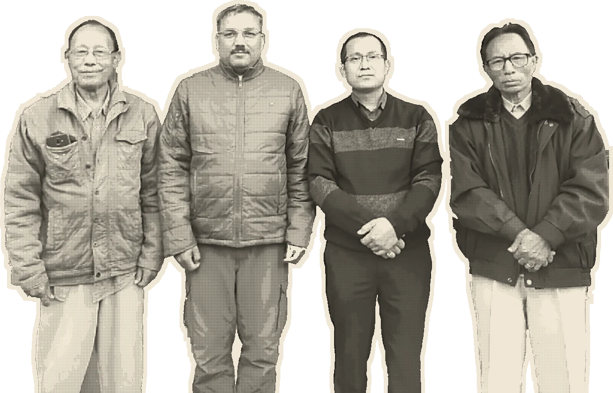

Our story
It began with four friends and one idea.
On 24 November 2024, four environmentalists met at a home in Nambol Makha Leikai. They left with a plan: give the Sangai a day of its own, and a trust to protect it.
Dr Khangembam Shamungou · Kumam Jugeshor · Salam Prasanta · Khwairakpam Budha
Four friends resolve to give the Sangai its own day
Meeting at a home in Nambol Makha Leikai, the four agreed to mark every 10 December as Sangai Day, recalling the 1954 resolution that created the Sangai sanctuary, and to found a trust to carry the work into schools.

The genesis of Sangai Day
After years of informal talks about the declining ecology of Loktak Lake and Keibul Lamjao, the founders made two decisions: mark every 10 December as Sangai Day, recalling the 1954 resolution that created the Sangai sanctuary, and start a trust to carry the work forward.

The story so far
-
CHAPTER 1
1954
A sanctuary is born
On 10 December, the Manipur Board for Wildlife, chaired by V.S. Sundram, resolved to create a 50 km² sanctuary for the Sangai.
-
CHAPTER 2
24 Nov 2024
Four friends, two decisions
At Dr Shamungou’s home in Nambol Makha Leikai, the founders declared 10 December “Sangai Day” and founded Sangai First Foundation.
-
CHAPTER 3
10 Dec 2024
The first Sangai Day
Held at Manipur Zoological Garden, Iroisemba, with the Forest Department’s Wildlife Wing. A year-long school campaign begins.
-
CHAPTER 4
27 Feb 2025
Going online
Our Facebook page launches. By November 2026 it has 107 posts this year and 4.5K views.
-
CHAPTER 5
10 Dec 2025
2nd Sangai Day
At Phouoibee Community Hall, Keibul Lamjao. 152 quiz winners and the top five of Yarou Sangai 2025 are honoured.
-
CHAPTER 6
2026
Roots and wheels
Nine more schools, a Save Sangai Campaign Block in Kakching, native tree drives and a 15 km Green Ride.
-
CHAPTER 7
10 Dec 2026
Sangai Heritage Hub
On the 3rd Sangai Day, we plan to open a permanent centre for conservation education at Keibul Ching.
Two years in numbers
1,054
students reached across 11 schools in 2025
586
students reached across 9 schools in 2026
269
quiz winners recognised in 2025 and 2026
268
people joined our 2026 planting drives

Why the Sangai
The brow-antlered deer is Manipur’s State Animal. In the wild it lives only in Keibul Lamjao, on the floating meadows of Loktak Lake.
Habitat loss, the Ithai Barrage and a small population put it at risk. That’s why we work with the next generation.
Discover the Sangai ›Our trustees
-
Dr Khangembam Shamungou
President · Managing Trustee
Founder. Author of 23 books on nature and the Sangai.
-
Kumam Jugeshor
Vice-President
Founder. Ornithologist and retired Principal of Kumbi College.
-
Tongbram Budhi
Trustee
-
Elangbam Premjit
Trustee
-
Khwairakpam Budha
Trustee
Founder.
-
Khangembam Ajitkumar
Trustee
-
Salam Brajakumar
Trustee
-
Salam Prasanta
Trustee
Founder.
-
Telheiba Kumam
Trustee

Read about the Sangai
We give Dr Shamungou’s books to every school we visit, among them “Sangai” (1993), “Endangered Manipur Brow-antlered Deer” (2010) and “Loktak Eidi Wareda” (2009).